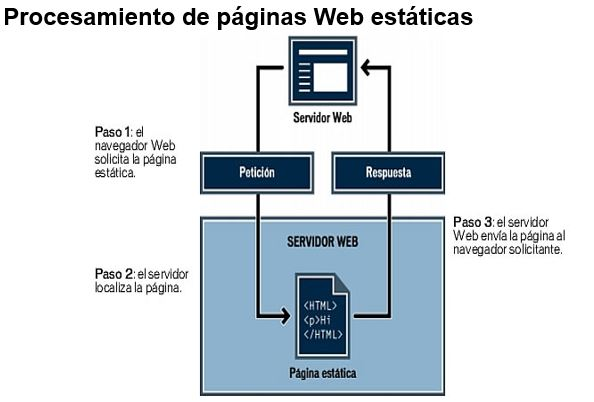
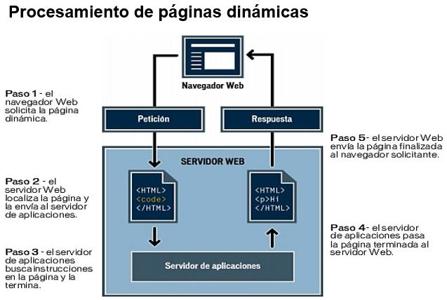

La Web funciona siguiendo el denominado modelo cliente-servidor, habitual en las aplicaciones que funcionan en una red. Existe un servidor, que es quien presta el servicio, y un cliente, que es quien lo recibe.

La Web funciona siguiendo el denominado modelo cliente-servidor, habitual en las aplicaciones que funcionan en una red. Existe un servidor, que es quien presta el servicio, y un cliente, que es quien lo recibe.
Una página Web estática es aquélla que no cambia cuando un usuario la solicita: el servidor Web envía la página al navegador Web solicitante sin modificarla.
Por el contrario, si el servidor modifica las páginas Web antes de enviarlas al navegador solicitante será una:página dinámica.
